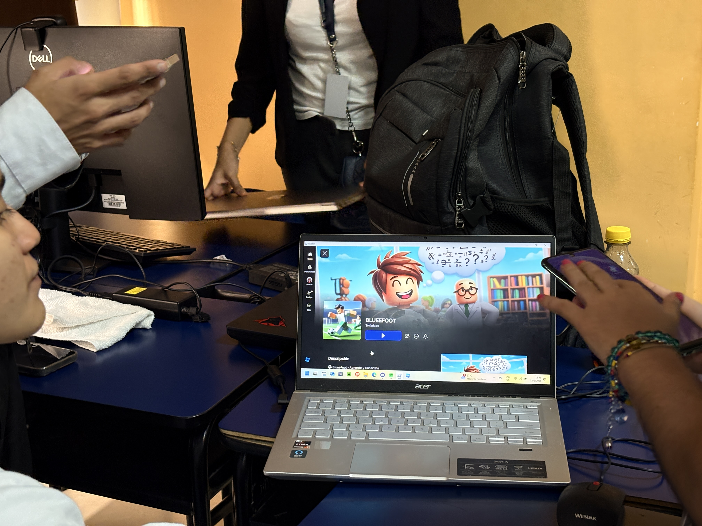

Guillermo Pizarro
Estudios Realizados
Proyectos
Referencias
Me gusta la tecnología y sus diversas aplicaciones, he tenido la oportunidad de trabajar en el campo de la informática desde mis inicios profesionales y creo que podré aportar mucho en el área de la inteligencia artificial con aplicaciones web para productos empresariales.
Proyectos
Proyecto: TIC-InnovaEdu

- Descripción: Proyecto de Vinculación (2024 hasta la actualidad).
- Materias: Programación y Plataformas Web y Sistemas Embebidos.
Proyecto: TIC-InnovaEdu
- Descripción: Proyecto de Vinculación (2024 hasta la actualidad).
- Materias: Programación y Plataformas Web y Sistemas Embebidos.